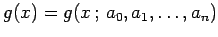
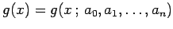
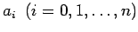
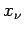
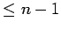
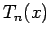

Inhalt Index DeskTop Bronstein

 Numerische Mathematik Approximation, Ausgleichsrechnung, Harmonische Analyse Tschebyscheff-Approximation Aufgabenstellung und Alternantensatz
Numerische Mathematik Approximation, Ausgleichsrechnung, Harmonische Analyse Tschebyscheff-Approximation Aufgabenstellung und Alternantensatz


Unter TSCHEBYSCHEFF-Approximation oder gleichmäßiger Approximation versteht man im stetigen Fall die folgende Aufgabe: In einem Intervall  ist die Funktion f(x) durch eine Näherungsfunktion  so zu approximieren, daß der größte Fehlerbetrag
ist die Funktion f(x) durch eine Näherungsfunktion  so zu approximieren, daß der größte Fehlerbetrag
durch geeignete Wahl der Parameter  möglichst klein wird. Existiert für f(x) eine solche Näherungsfunktion, dann wird der Maximalwert der Abweichung in mindestens n+2 Punkten  des Intervalls, den sogenannten Alternantenpunkten, mit abwechselndem Vorzeichen angenommen (s. Abbildung).
Das ist der wesentliche Inhalt des sogenannten Alternantensatzes zur Charakterisierung der Lösung einer TSCHEBYSCHEFFschen Approximationsaufgabe.
| Beispiel |
|
Approximiert man auf dem Intervall [-1,1] die Funktion f(x) = xn durch ein Polynom vom Grade  im TSCHEBYSCHEFFschen Sinne, dann erhält man als Fehlerfunktion, wenn auf den Maximalwert 1 normiert wird, das TSCHEBYSCHEFFsche Polynom . Die Alternantenpunkte, die sich aus den Randpunkten und genau n-1 Punkten im Innern des Intervalls zusammensetzen, entsprechen den Extremstellen von Tn(x) (s. die folgende, aus 6 Teilen bestehende Abbildung). |